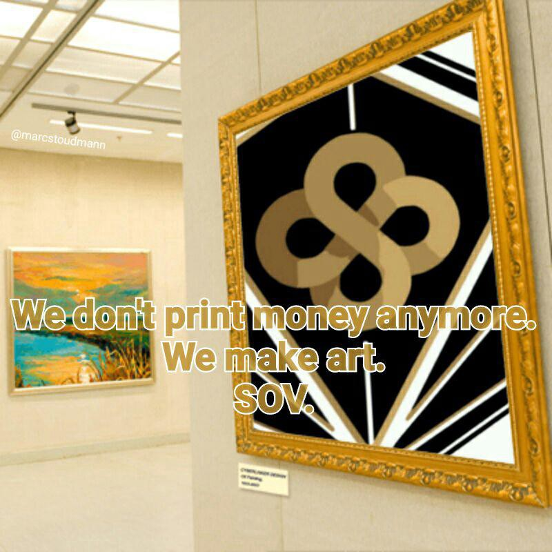

Marc Charles Árpád Stoudmann
Blockchain Advisor and Devops, strong background in IT Infracture Support, focused on
Customer Satisfaction for the Greater Good.
My name is Marc Stoudmann, known as Árpád in the blockchain community.
I studied IT and worked for 15+ years in IT Infrastructure Support.
Currently I am studying full-stack web development to develop my logical skills and further develop my brain.
Ultimately I would like to code EOSIO smart contracts and be an active developer and project leader
on the blockchain
for projects which bring good to all of humanity. I am fascinated by advanced technology, galactic life,
and generally expanding consciousness in a heartcentred way.
Education, Training and Interests
- Swiss IT Apprenticeship
- Strong IT Support experience
- Level 1 - Helpdesk : mostly reactive work, receiving calls and emails from customers, and resolving them
as much as one can before sending them on to second level for resolution where necessary.
- Level 2 - Receives tickets and intervenes to solve problems, while generally maintaining infrastructure
on a day-to-day basis.
- Cloud Sales and overall knowledge
- Blockchain - connecting people and projects, and supporting those I feel strongly for.
- EOSIO, more precisely EOS
- EOS SOV community
- Onessus VOID community and venture
- Liquidapps project and potential for full Interblockchain presence - being the connecting fluid which
allows for the whole suite of blockchains to communicate and coexist, and for the whole to function optimally.